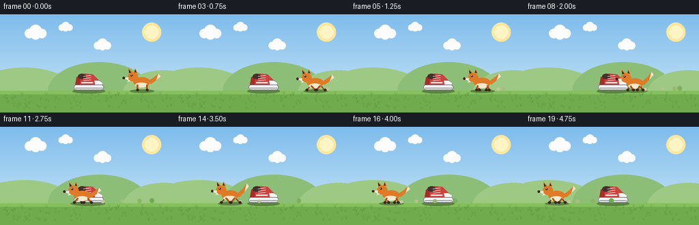
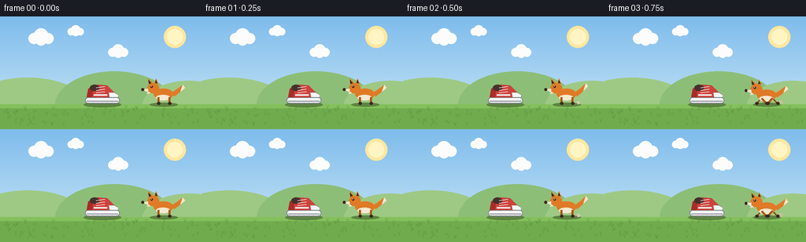

CODING AGENTS AS PIXEL WORLD MODELS
traex/Seed-2.1-Pro-0915 · dynamic_spatial_relationship_0029
点击播放 · 原生 RGB 像素
逐轮保存的候选
回放视频、检查图与代码变化。
每份候选均可单独播放。实际图片检查记录在下方工具轨迹中。
候选 01播放与检查图
点击播放 · 原生 RGB 像素


展开代码变化
--- 上一保存版本
+++ 本次保存版本
@@ -0,0 +1,257 @@
+"""Text-to-video: a fox runs from the right of a shoe to the left of it.
+
+Renders 20 RGB frames at 256x144 (4 fps) with PIL only, then saves via
+artifact_io.save. Everything is deterministic; no external assets.
+"""
+import math
+import os
+
+import numpy as np
+from PIL import Image, ImageDraw
+
+import artifact_io
+
+W, H, N, FPS = 256, 144, 20, 4.0
+SS = 3 # supersampling factor for smooth edges
+
+GROUND_Y = 112
+SHOE_X = 130
+
+ORANGE = (224, 122, 38)
+ORANGE_DK = (176, 84, 22)
+CREAM = (243, 232, 208)
+DARK = (58, 38, 28)
+WHITE = (245, 245, 245)
+
+
+def s(v):
+ return int(round(v * SS))
+
+
+def draw_background(rng):
+ """Sky gradient, sun, clouds, hills, grass ground."""
+ big = Image.new("RGB", (W * SS, H * SS))
+ px = big.load()
+ top = np.array([126, 188, 236])
+ bottom = np.array([206, 232, 246])
+ for y in range(H * SS):
+ t = y / (H * SS)
+ col = tuple((top * (1 - t) + bottom * t).astype(int))
+ for x in range(W * SS):
+ px[x, y] = col
+ d = ImageDraw.Draw(big)
+
+ # Sun
+ d.ellipse([s(208), s(12), s(236), s(40)], fill=(255, 231, 158))
+ d.ellipse([s(212), s(16), s(232), s(36)], fill=(255, 244, 196))
+
+ # Clouds (fixed positions)
+ for cx, cy, sc in [(52, 26, 1.0), (150, 44, 0.8), (96, 18, 0.65)]:
+ for dx, dy, r in [(-9, 2, 7), (0, -2, 9), (9, 2, 7), (0, 4, 7)]:
+ d.ellipse(
+ [s(cx + (dx - r) * sc), s(cy + (dy - r) * sc),
+ s(cx + (dx + r) * sc), s(cy + (dy + r) * sc)],
+ fill=(252, 252, 252),
+ )
+
+ # Distant hills
+ d.ellipse([s(-40), s(78), s(110), s(150)], fill=(158, 201, 132))
+ d.ellipse([s(70), s(70), s(220), s(156)], fill=(141, 190, 120))
+ d.ellipse([s(180), s(82), s(300), s(150)], fill=(158, 201, 132))
+
+ # Ground
+ d.rectangle([0, s(GROUND_Y), W * SS, H * SS], fill=(112, 172, 78))
+ d.rectangle([0, s(GROUND_Y), W * SS, s(GROUND_Y + 5)], fill=(132, 192, 92))
+
+ # Grass tufts (deterministic)
+ for gx in rng.uniform(4, W - 4, 90):
+ gy = GROUND_Y + 4 + rng.uniform(0, H - GROUND_Y - 8)
+ h = rng.uniform(2.5, 5)
+ d.line([s(gx), s(gy), s(gx - 1.5), s(gy - h)], fill=(86, 140, 58))
+ d.line([s(gx), s(gy), s(gx + 1.5), s(gy - h)], fill=(86, 140, 58))
+
+ return big
+
+
+def draw_shoe(img):
+ """A static sneaker resting on the ground, toe pointing right."""
+ d = ImageDraw.Draw(img)
+ x, y = SHOE_X, GROUND_Y
+ red = (206, 66, 60)
+ red_dk = (168, 44, 42)
+ gray = (120, 126, 134)
+
+ # Shadow
+ d.ellipse([s(x - 24), s(y - 3), s(x + 24), s(y + 4)], fill=(92, 132, 64))
+
+ # Sole
+ d.rounded_rectangle([s(x - 22), s(y - 9), s(x + 22), s(y - 1)],
+ radius=s(4), fill=WHITE, outline=gray, width=s(1))
+ d.line([s(x - 20), s(y - 4), s(x + 20), s(y - 4)], fill=gray, width=s(1))
+ # Sole tread
+ for tx in range(-18, 19, 6):
+ d.line([s(x + tx), s(y - 2), s(x + tx), s(y)], fill=gray, width=s(1))
+
+ # Upper body
+ upper = [
+ (x - 20, y - 9), (x - 18, y - 20), (x - 6, y - 25),
+ (x + 6, y - 24), (x + 14, y - 16), (x + 20, y - 12),
+ (x + 20, y - 9),
+ ]
+ d.polygon([(s(px_), s(py_)) for px_, py_ in upper], fill=red, outline=red_dk)
+
+ # Toe cap
+ toe = [(x + 8, y - 15), (x + 15, y - 15), (x + 20, y - 12),
+ (x + 20, y - 9), (x + 9, y - 9)]
+ d.polygon([(s(px_), s(py_)) for px_, py_ in toe], fill=WHITE, outline=gray)
+
+ # Heel counter
+ d.polygon([(s(x - 20), s(y - 9)), (s(x - 18), s(y - 20)),
+ (s(x - 12), s(y - 22)), (s(x - 13), s(y - 9))], fill=red_dk)
+
+ # Collar opening
+ d.ellipse([s(x - 16), s(y - 25), s(x - 4), s(y - 17)], fill=(70, 48, 44))
+
+ # Laces
+ for i in range(3):
+ ly = y - 21 + i * 3.2
+ d.line([s(x - 8), s(ly), s(x + 3), s(ly - 1.5)], fill=WHITE, width=s(1))
+
+ # Side stripe
+ d.line([s(x - 11), s(y - 12), s(x + 6), s(y - 12)], fill=WHITE, width=s(2))
+
+
+def draw_fox(img, cx, phase, moving, dust):
+ """Side-view fox facing left. phase drives the run cycle."""
+ d = ImageDraw.Draw(img)
+ feet_y = GROUND_Y
+ bob = math.sin(phase * 2) * 1.6 if moving else 0
+ cy = feet_y - 13 + bob
+
+ # Shadow (stays on ground)
+ d.ellipse([s(cx - 18), s(feet_y - 2), s(cx + 18), s(feet_y + 3)],
+ fill=(92, 132, 64))
+
+ # Dust puffs behind the fox (it moves left, so dust is on the right)
+ for px_, py_, r, alpha in dust:
+ t = min(alpha / 8.0, 1.0)
+ col = tuple(int((1 - t) * a + t * b) for a, b in
+ zip((222, 206, 178), (112, 172, 78)))
+ d.ellipse([s(px_ - r), s(py_ - r), s(px_ + r), s(py_ + r)], fill=col)
+
+ swing = math.sin(phase) if moving else 0
+ swing2 = math.sin(phase + math.pi) if moving else 0
+ leg_col = ORANGE_DK
+
+ def leg(hip_x, swing_v, far):
+ foot_dx = swing_v * 7
+ col = (140, 66, 20) if far else leg_col
+ width = 2.0 if far else 2.6
+ d.line([s(hip_x), s(cy + 4), s(hip_x + foot_dx), s(feet_y - 1)],
+ fill=col, width=s(width))
+ # Paw
+ d.ellipse([s(hip_x + foot_dx - 1.8), s(feet_y - 3),
+ s(hip_x + foot_dx + 2.6), s(feet_y + 0.5)], fill=DARK)
+
+ # Far legs first, then near legs
+ leg(cx - 7, swing2, True)
+ leg(cx + 7, swing, True)
+
+ # Tail, swept back to the right, gently wagging
+ wag = math.sin(phase * 0.8) * 3 if moving else 2
+ tail_pts = [
+ (cx + 10, cy - 2),
+ (cx + 18, cy - 8 + wag * 0.4),
+ (cx + 24, cy - 14 + wag),
+ (cx + 27, cy - 10 + wag),
+ (cx + 21, cy - 4 + wag * 0.5),
+ (cx + 13, cy + 3),
+ ]
+ d.polygon([(s(px_), s(py_)) for px_, py_ in tail_pts], fill=ORANGE)
+ # White tail tip
+ tip = tail_pts[2:5]
+ d.polygon([(s(px_), s(py_)) for px_, py_ in tip], fill=CREAM)
+
+ # Body
+ d.ellipse([s(cx - 13), s(cy - 7), s(cx + 12), s(cy + 7)], fill=ORANGE)
+ # Belly
+ d.ellipse([s(cx - 10), s(cy + 1), s(cx + 8), s(cy + 8)], fill=CREAM)
+
+ # Head (front = left)
+ hx, hy = cx - 13, cy - 8
+ d.ellipse([s(hx - 8), s(hy - 6), s(hx + 7), s(hy + 7)], fill=ORANGE)
+ # Ears
+ d.polygon([(s(hx - 6), s(hy - 4)), (s(hx - 7), s(hy - 12)),
+ (s(hx - 1), s(hy - 6))], fill=ORANGE)
+ d.polygon([(s(hx - 6), s(hy - 5)), (s(hx - 6.4), s(hy - 10)),
+ (s(hx - 3), s(hy - 6))], fill=DARK)
+ d.polygon([(s(hx + 1), s(hy - 6)), (s(hx + 3), s(hy - 12)),
+ (s(hx + 6), s(hy - 5))], fill=ORANGE)
+ d.polygon([(s(hx + 2), s(hy - 6.5)), (s(hx + 3), s(hy - 10)),
+ (s(hx + 4.6), s(hy - 5.8))], fill=DARK)
+ # Snout
+ d.polygon([(s(hx - 7), s(hy + 1)), (s(hx - 14), s(hy + 2)),
+ (s(hx - 7), s(hy + 6))], fill=CREAM)
+ d.ellipse([s(hx - 15.5), s(hy + 0.5), s(hx - 12), s(hy + 4)], fill=DARK)
+ # Eye
+ d.ellipse([s(hx - 4), s(hy - 3), s(hx - 1), s(hy + 0)], fill=DARK)
+ d.ellipse([s(hx - 3.4), s(hy - 2.6), s(hx - 2.4), s(hy - 1.6)],
+ fill=WHITE)
+ # Cheek fluff
+ d.polygon([(s(hx - 6), s(hy + 5)), (s(hx - 9), s(hy + 8)),
+ (s(hx - 4), s(hy + 7))], fill=CREAM)
+
+ # Near legs on top
+ leg(cx - 7, swing, False)
+ leg(cx + 7, swing2, False)
+
+
+def smoothstep(t):
+ return t * t * (3 - 2 * t)
+
+
+def main():
+ rng = np.random.default_rng(20261110)
+ bg_big = draw_background(rng)
+ draw_shoe(bg_big)
+
+ x_start, x_end = 208, 48
+ hold_frames = 2
+ frames = []
+ dust_puffs = []
+
+ for i in range(N):
+ if i < hold_frames:
+ fx = x_start
+ moving = False
+ t = 0.0
+ else:
+ t = (i - hold_frames) / (N - 1 - hold_frames)
+ fx = x_start + (x_end - x_start) * smoothstep(t)
+ moving = True
+
+ # Emit dust while running
+ if moving and i % 2 == 0:
+ dust_puffs.append([fx + 14, GROUND_Y - 2, 2.0, 0])
+ for puff in dust_puffs:
+ puff[0] += 0.8
+ puff[1] -= 0.25
+ puff[2] += 0.18
+ puff[3] += 1
+ dust_puffs = [p for p in dust_puffs if p[3] < 9]
+
+ frame_big = bg_big.copy()
+ phase = (i - hold_frames) * 1.15
+ draw_fox(frame_big, fx, phase, moving,
+ [tuple(p) for p in dust_puffs])
+ frame = frame_big.resize((W, H), Image.Resampling.LANCZOS)
+ frames.append(np.asarray(frame, dtype=np.uint8))
+
+ frames = np.stack(frames)
+ case_dir = os.path.dirname(os.path.abspath(__file__))
+ artifact_io.save(frames, case_dir)
+ print(f"Saved {frames.shape} to {case_dir}")
+
+
+if __name__ == "__main__":
+ main()
可观测工具轨迹
实际执行的命令与返回图片。
命令 1exit 0
/bin/bash -lc 'ls -la && cat prompt.txt && cat GENERATION_RULES.md && cat task_spec.json'
命令 2exit 0
/bin/bash -lc 'cat artifact_io.py; cat player_template.html | head -30'
命令 3exit 0
/bin/bash -lc "grep -n \"Heel counter\" -A4 generate.py; grep -n \"bg_big\\|base\\|frame = \" generate.py"
命令 4exit 0
/bin/bash -lc 'sed -n 100,115p generate.py; sed -n 245,275p generate.py'
命令 5exit 0
/bin/bash -lc 'cd "$(pwd)" && python generate.py && ls -la frames | head -8 && ls -la pixels.npz inspection.png index.html'
保存候选 1 份；完成命令 5 次；可验证图片返回 0 张。原始 API 响应与完整日志保留在本地。